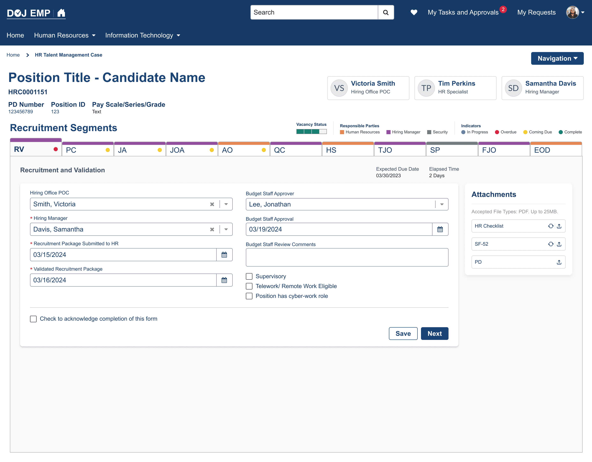
The Problem
DOJ's recruitment process ran manually across agencies that don't share a common technical environment — each domain-separated org has its own systems and constraints. Onboarding involved hundreds of staff hours spent chasing documents, re-entering the same information across disconnected steps, and manually assembling paperwork with no shared source of truth. Consolidating that into one process meant designing something that had to hold up across environments that weren't built to talk to each other.
My Role
I came in as Design Lead responsible for establishing OCIO's product design foundation — shared components, interaction patterns, and accessibility standards — that other teams could build on. Time to Hire was the first major feature built on top of that foundation, and I presented the direction, including this system, directly to DOJ executive leadership, including the CIO.
Approach
The foundation had to solve a harder problem than any single feature: create one common design language flexible enough to work across independently-run technical environments, without forcing every domain org onto identical infrastructure. I designed it to be cloned and adapted rather than assuming any org could just adopt it wholesale — the reuse model had to match how DOJ's orgs actually operate, separately.
Time to Hire applied that foundation to the recruitment process specifically: integrations, auto-populating smart fields, and in-place document generation replaced steps that previously required staff to gather the same information from multiple disconnected systems by hand. Generated documents could be downloaded pre-filled, reviewed copies uploaded back into the same flow, and a built-in checklist tracked what both staff and hiring managers still needed to provide — collapsing what had been a multi-system, manually-tracked process into one place.
Attachments component
Generate, download, review and upload — every state of the panel from Fig. 1, in order. Icons on each row show what can happen next.
2.1Ready. HR Checklist and SF-52 can be generated; PD can only be uploaded.
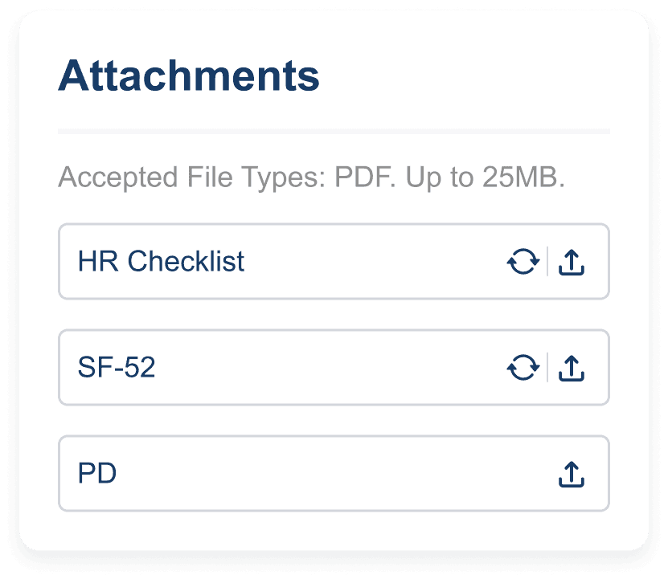
2.2Generated. HR Checklist confirms, and its generate icon becomes download.
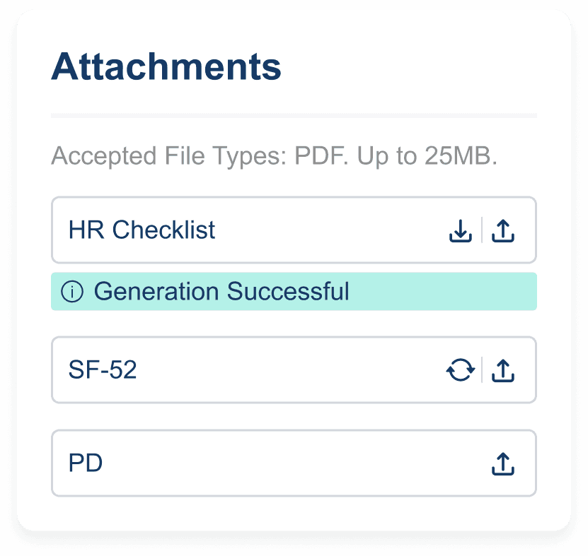
2.3Ready to download. The message clears; download stays.
2.4Downloaded. Confirmation; the row now waits for the reviewed copy.
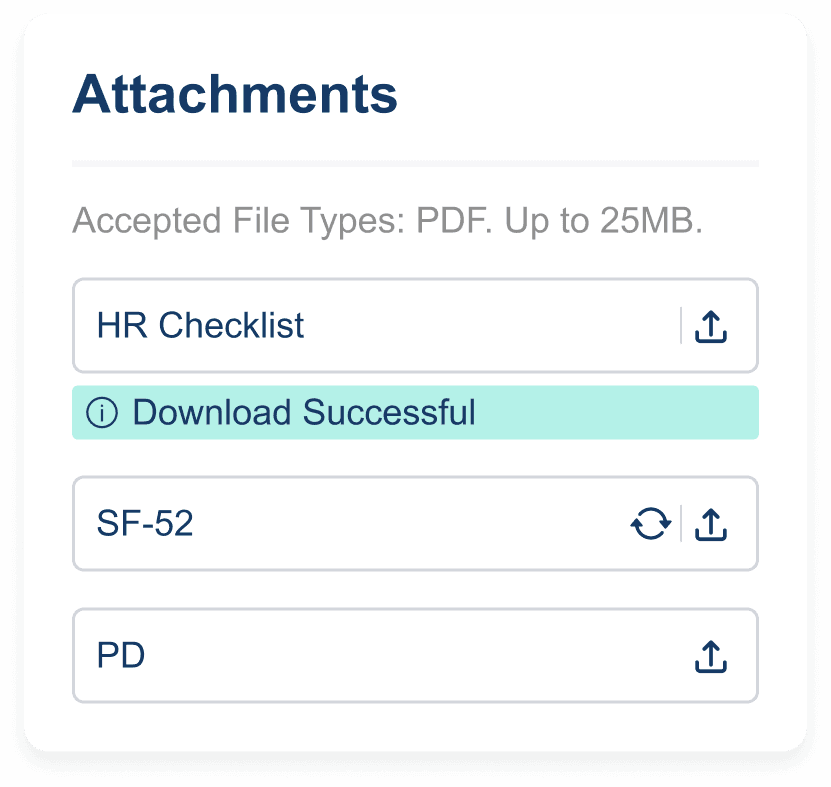
2.5Awaiting upload. Only upload remains on HR Checklist.
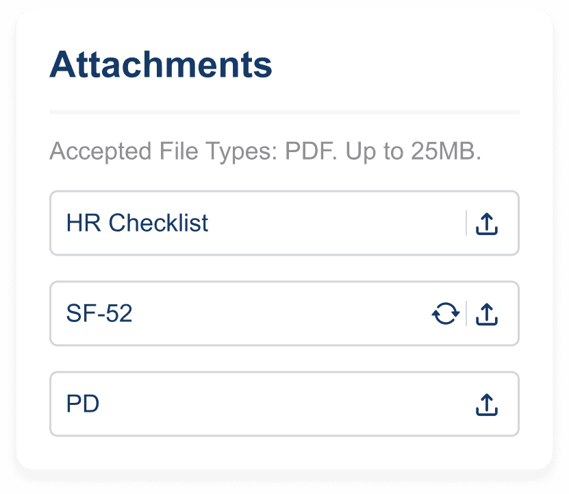
2.6Uploaded. The file is attached under its row, with delete.
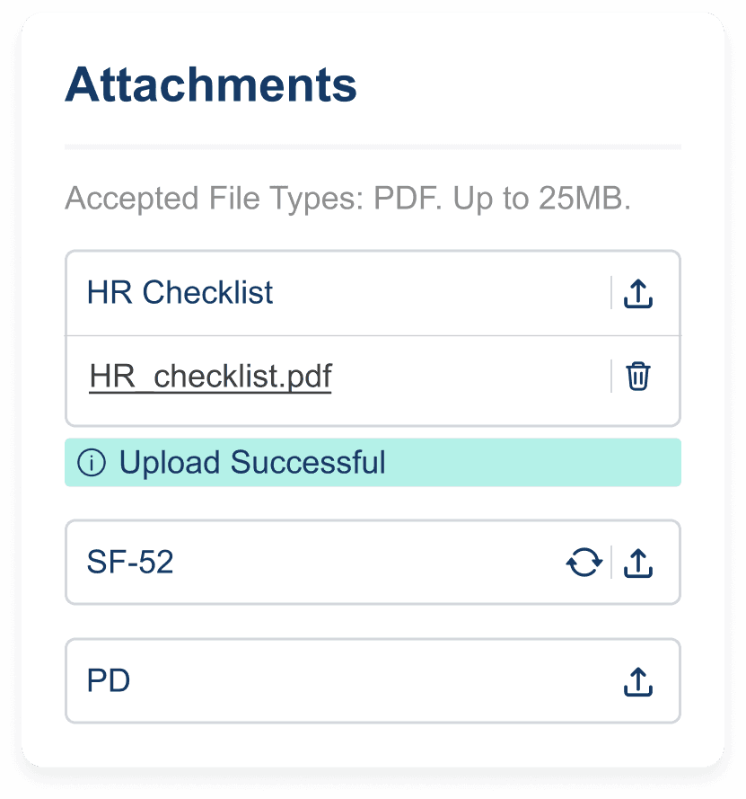
2.7One done. HR Checklist complete; SF-52 still to generate.
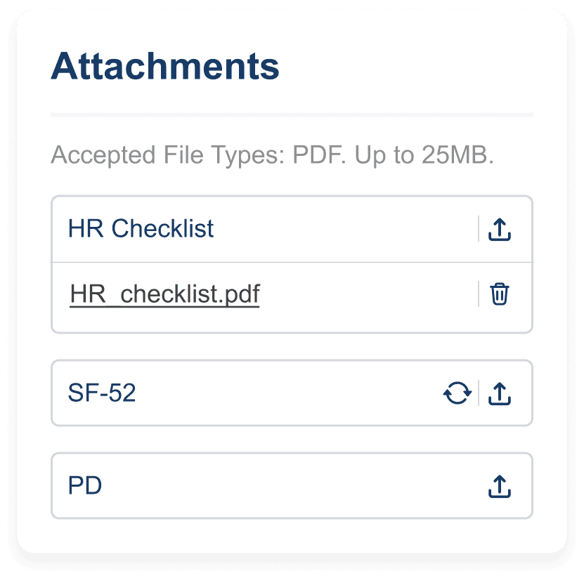
2.8All three attached. HR Checklist, SF-52 and PD each carry a file.
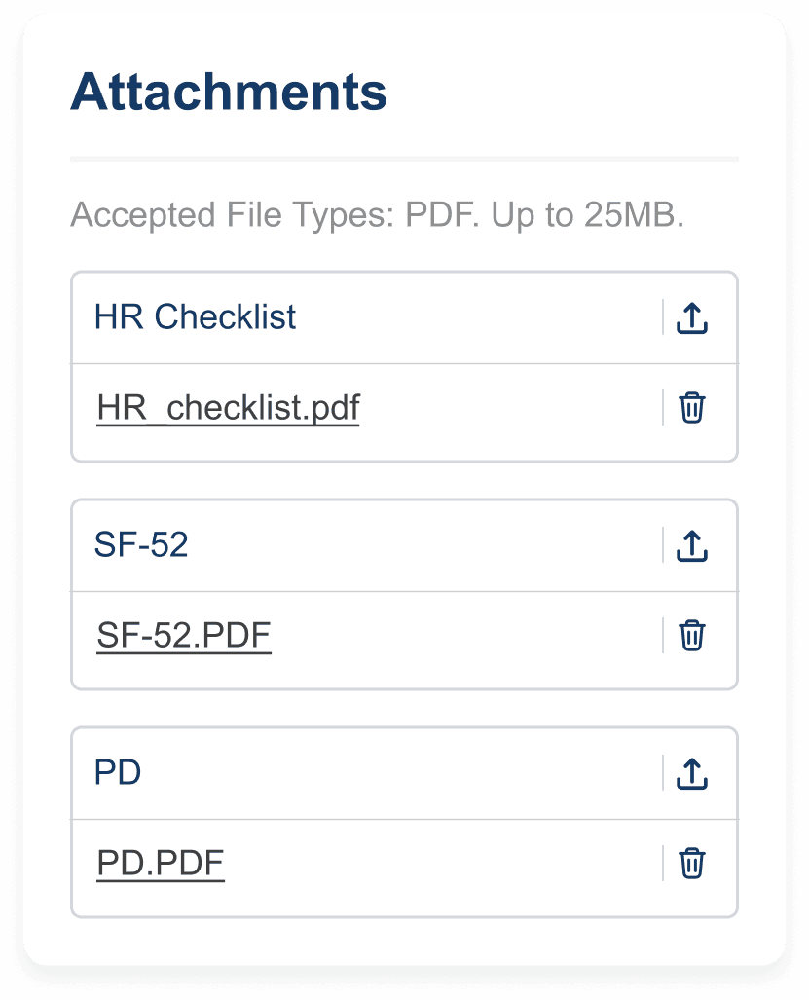
Completing a segment
Finishing a recruitment segment asks for an explicit acknowledgement, then locks the form.
3.1Filled. All fields and attachments complete; acknowledgement unchecked.
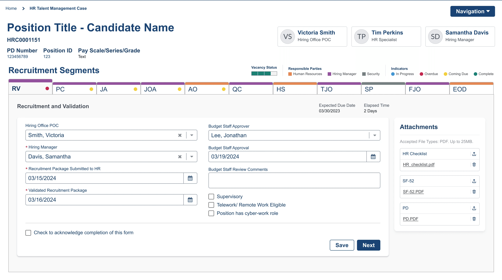
3.2Confirm. “After acknowledging, this form will no longer be editable.”
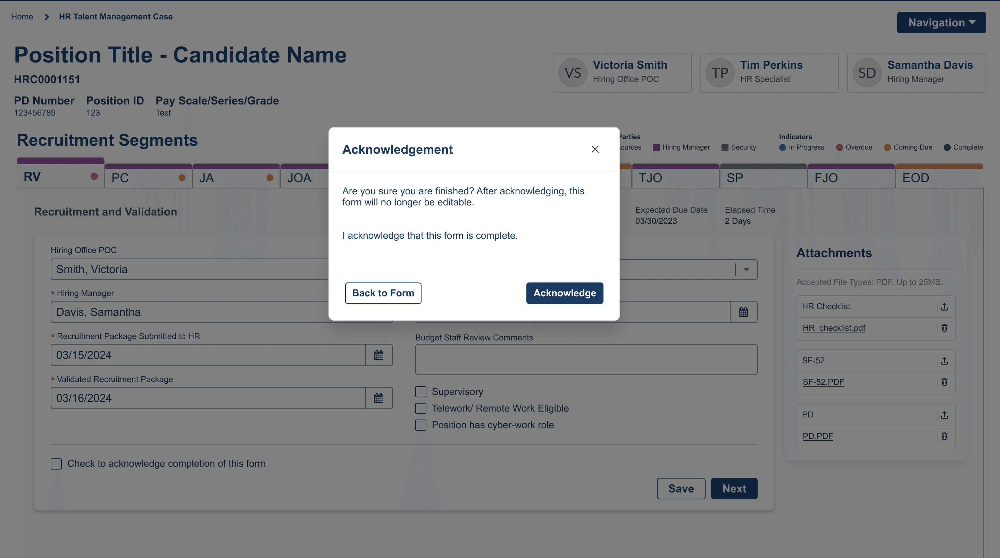
3.3Locked. Box checked; fields and Save disabled; Next stays active.
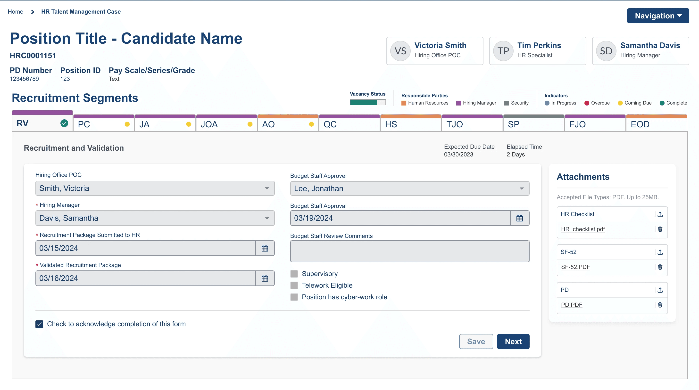
Outcome
Time to Hire shipped as the first feature built on OCIO's new design foundation, consolidating a previously manual, multi-agency recruitment process into a single flow — and proving the underlying system could actually hold across DOJ's independently-run technical environments, not just work as a one-off feature.